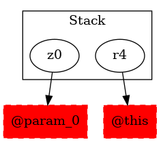

-1 : r4 := @this: Test6
-1 : z0 := @parameter0: boolean -> class soot.jimple.internal.JIdentityStmt
49 : r0 = newarray (testcase.Test6)[10]
50 : r1 = r0[4]
51 : $r2 = new testcase.Test6
51 : specialinvoke $r2.|testcase.Test6: void |init|()|()
51 : r0[4] = $r2
52 : if z0 == 0 goto return r1
53 : $r3 = r0[10]
53 : return $r3
55 : return r1
